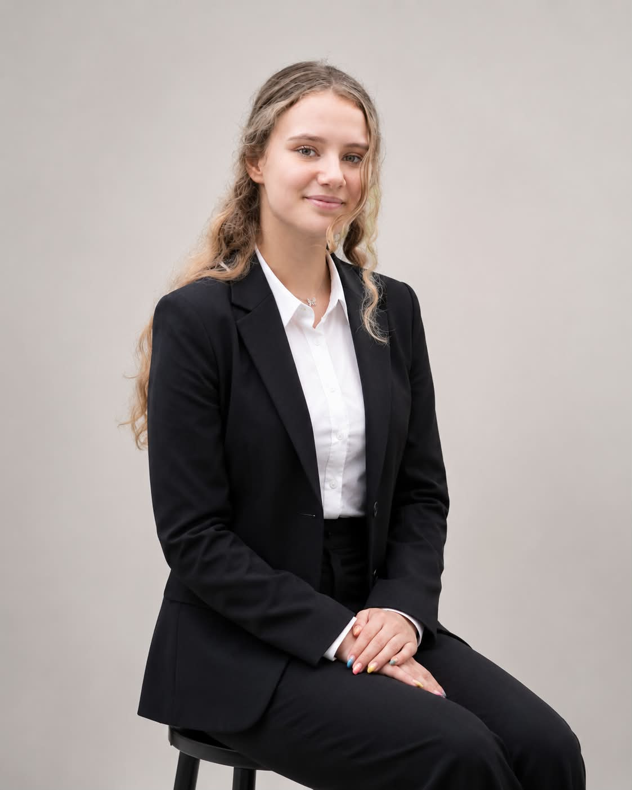
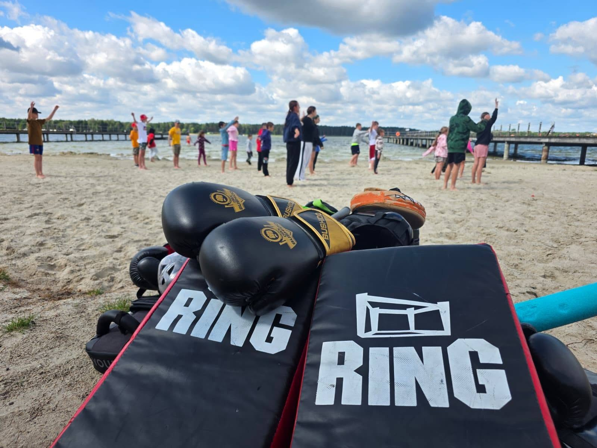
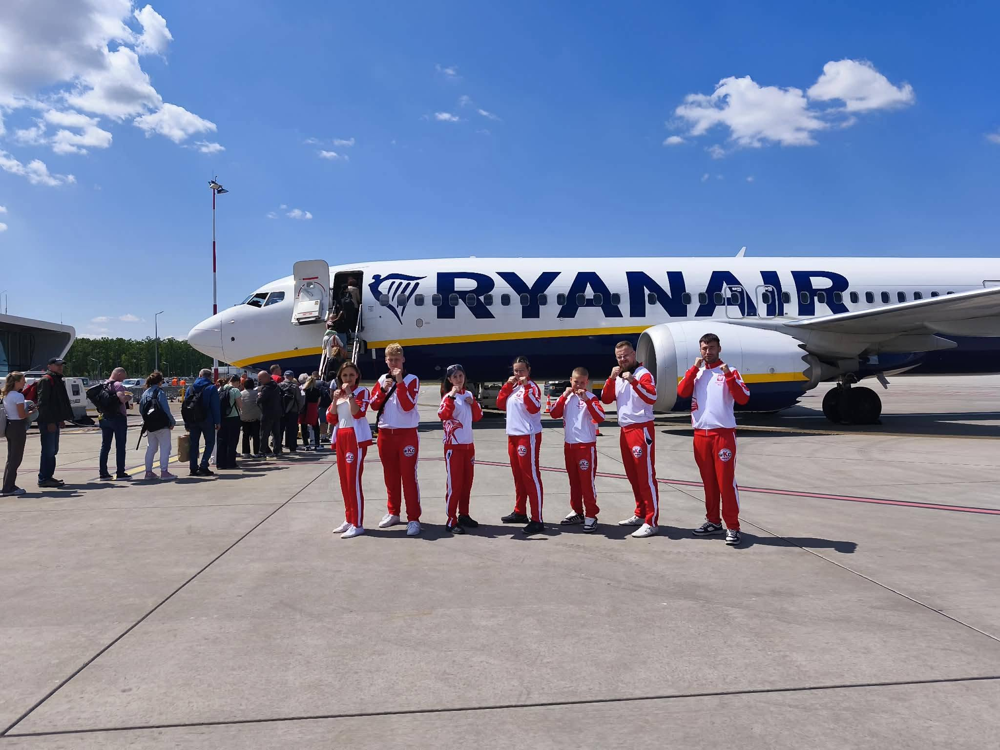
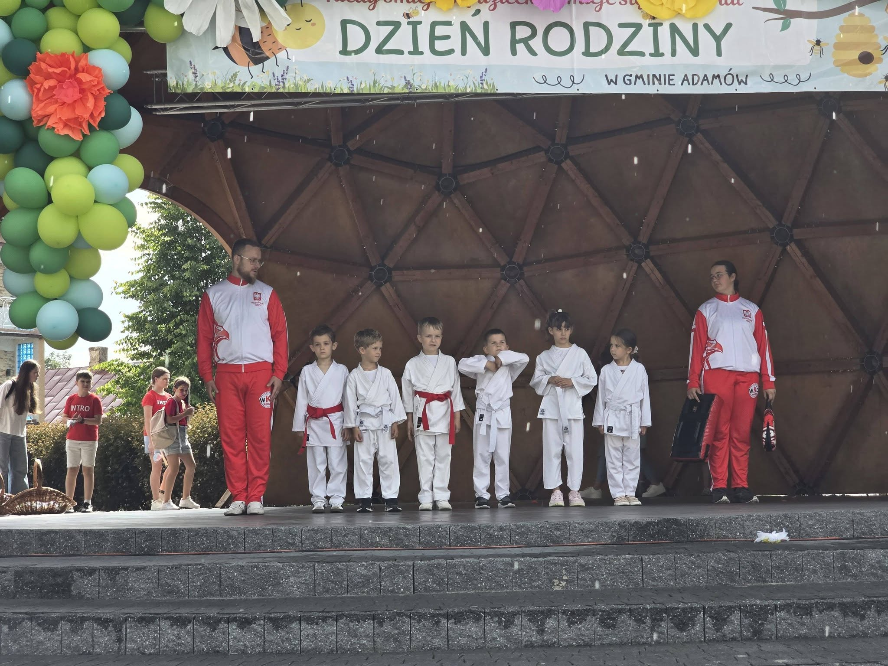

Nasz zespół
Za sukcesem Polskiego Stowarzyszenia Bezpieczeństwa Osobistego stoi zespół ludzi, których łączy wspólna misja – promowanie bezpieczeństwa osobistego, aktywności fizycznej oraz edukacji dzieci, młodzieży i dorosłych. Naszą siłą są doświadczenie, profesjonalizm oraz zaangażowanie w budowanie świadomego i bezpiecznego społeczeństwa.
Jacek Błasiński
Prezes Stowarzyszenia
Założyciel i Prezes Polskiego Stowarzyszenia Bezpieczeństwa Osobistego. Dyrektor World Karate and Kickboxing Union (WKU) oraz World Kickboxing Organization (WKO) odpowiedzialny za budowę struktur reprezentacji w Polsce. Wieloletni zawodnik Kadry Polski Kickboxingu w różnych federacjach, obecnie Trener Kadry Polski WKO, WKU, ISKA oraz Trener Kadry Polski Polskiej Federacji Kickboxingu.
Instruktor kickboxingu, boksu, karate, taekwondo, krav magi, samoobrony oraz taktyk i technik interwencyjnych. Wielokrotny mistrz Polski, Europy i świata w kickboxingu, posiadający bogate doświadczenie sportowe, szkoleniowe i organizacyjne.
Posiada stopnie mistrzowskie 4 Dan Kickboxing i Karate oraz 3 Dan Taekwondo. Pełni również funkcję Dyrektora i Koordynatora Technicznego World Krav Maga Federation w Polsce, odpowiadając za rozwój szkolenia oraz standardy instruktorskie.
Od wielu lat prowadzi szkolenia z zakresu sportów walki, samoobrony i bezpieczeństwa osobistego dla dzieci, młodzieży, dorosłych oraz przedstawicieli różnych instytucji.

Krystian Filipek
Wiceprezes Stowarzyszenia • Instruktor Samoobrony • Instruktor Karate
Wiceprezes Polskiego Stowarzyszenia Bezpieczeństwa Osobistego, instruktor karate oraz certyfikowany instruktor samoobrony i taktyk interwencyjnych. Od wielu lat prowadzi szkolenia dla dzieci, młodzieży i dorosłych, łącząc doświadczenie sportowe z praktycznym podejściem do bezpieczeństwa.
Posiada stopień 3 Dan Karate, jest trenerem personalnym oraz instruktorem walki wręcz. Nieustannie rozwija swoje kompetencje poprzez udział w szkoleniach i seminariach.
Za swoją działalność został wyróżniony 7. miejscem w ogólnopolskim plebiscycie Trener Roku 2025 oraz tytułem Osobowość Roku 2024 Województwa Lubelskiego.

Monika Grudniak
Skarbnik • Księgowa • Sekretarz
Skarbnik, księgowa oraz sekretarz Polskiego Stowarzyszenia Bezpieczeństwa Osobistego. Posiada wieloletnie doświadczenie zawodowe zdobyte w branży deweloperskiej, gdzie odpowiadała za prowadzenie spraw finansowych i administracyjnych.
W stowarzyszeniu czuwa nad prawidłowym funkcjonowaniem finansów, dokumentacji oraz organizacją pracy biura. Jej dokładność, odpowiedzialność i profesjonalizm stanowią ważny filar działalności organizacji.
Julia Kuczyńska
Instruktor Samoobrony • Grafik • Instruktor Tańca
Certyfikowany instruktor samoobrony, grafik oraz instruktor tańca dla dzieci. Przez wiele lat rozwijała swoje umiejętności w zespołach tańca ludowego, zdobywając doświadczenie sceniczne oraz pedagogiczne.
Posiada wieloletnie doświadczenie w pracy z dziećmi i młodzieżą jako wychowawca oraz animator. W stowarzyszeniu odpowiada również za przygotowywanie materiałów graficznych oraz wspiera działania promocyjne.

Majka Majewska
Instruktor Samoobrony • Animator Dzieci i Młodzieży
Instruktor samoobrony oraz animator czasu wolnego z wieloletnim doświadczeniem w pracy z dziećmi i młodzieżą. Prowadzi zajęcia sportowe, rekreacyjne i edukacyjne, dbając o rozwój, bezpieczeństwo oraz dobrą atmosferę.
W swojej pracy stawia na indywidualne podejście, budowanie pewności siebie oraz rozwijanie aktywności fizycznej wśród najmłodszych.

Weronika Błasińska
Instruktor Samoobrony
Instruktor samoobrony oraz osoba zajmująca się organizacją wydarzeń a także kontaktem z partnerami.
Poprzez swoje zaangażowanie wspiera rozwój dzieci i młodzieży, promując aktywność fizyczną, pewność siebie oraz umiejętności społeczne.
Galeria
Zobacz nas w akcji – treningi, wydarzenia oraz chwile, które budują naszą wspólnotę.



Nasza Lokalizacja
Kontakt
PREZES -
Jacek Błasiński
Tel. 504 458 955
WICEPREZES -
Krystian Filipek
Tel. 693 544 000
SKARBNIK -
Monika Grudniak
Tel. 531 368 637